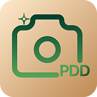

Masih memuat. Pastikan internetmu aktif. Kalau tetap kosong, buka langsung di browser.
Order dikirim langsung ke spreadsheet PDD, jadi butuh internet. Sambungkan lalu coba lagi.
Aplikasi ini butuh JavaScript. Aktifkan JavaScript di browsermu.